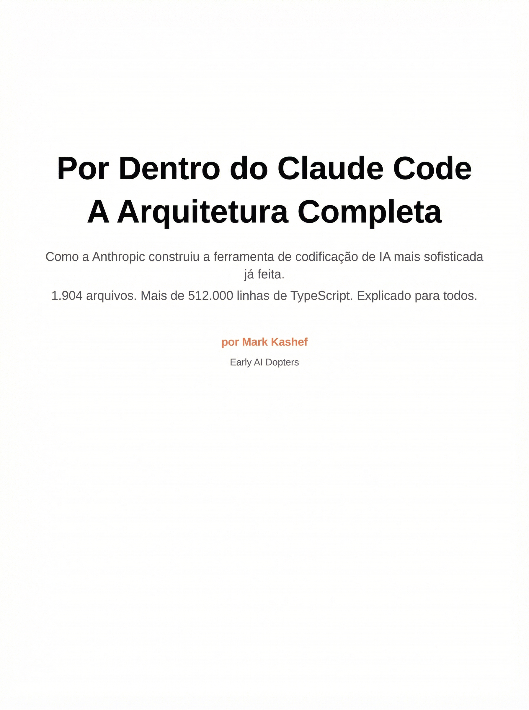

🔍 O Incidente — O que aconteceu em 31 de março de 2026
Em 31 de março de 2026, o que deveria ser uma atualização rotineira do Claude Code se tornou um dos maiores vazamentos acidentais de código proprietário na história da IA. Um arquivo de source map de 59,8 MB, destinado à depuração interna, foi incluído inadvertidamente na versão 2.1.88 do pacote npm.
O Vazamento em Números
📊 Timeline do Incidente
Versão 2.1.88 publicada no npm com source maps incluídos acidentalmente no pacote de distribuição.
Chaofan Shou publica a descoberta no X (Twitter), chamando atenção da comunidade de desenvolvedores e pesquisadores de segurança.
Código é replicado em 3+ repositórios no GitHub. Pesquisadores começam análise detalhada da arquitetura.
Anthropic lança nova versão removendo os arquivos .map. Repositórios espelho acumulam 1.100+ estrelas.
💡 Não era a primeira vez
Um incidente semelhante ocorreu em fevereiro de 2025, quando source maps também foram incluídos inadvertidamente em uma release do Claude Code. A recorrência desse tipo de problema sugere que a configuração de build e publicação merece atenção especial em projetos que usam bundlers como o Bun — especialmente quando o bundler gera source maps por padrão e o pipeline de publicação não possui verificações automatizadas para detectar arquivos indesejados no pacote final.
🧩 A Causa Técnica — Source maps, .npmignore e Bun
A causa raiz foi surpreendentemente simples: uma combinação de configuração inadequada de publicação npm e comportamento padrão do bundler Bun. Entender isso é uma lição valiosa para qualquer desenvolvedor que publica pacotes.
A Cadeia de Falhas
O vazamento aconteceu por uma sequência de quatro fatores que, individualmente, seriam inofensivos, mas combinados criaram a exposição completa:
O Bun (bundler usado pela Anthropic) gera source maps por padrão durante o processo de build, criando um arquivo .map com todo o código-fonte original.
O arquivo .npmignore do projeto não excluía arquivos com extensão .map, permitindo que fossem empacotados.
O processo de publicação no npm incluiu automaticamente o source map de 59,8 MB no pacote distribuído.
O source map continha o código-fonte TypeScript original completo — não ofuscado, com nomes de variáveis, comentários e toda a estrutura de diretórios intacta.
💡 Como Prevenir
Para proteger seus próprios pacotes npm contra vazamentos de source maps e código-fonte:
-
●
Adicione
*.map,*.js.mape*.d.ts.mapao .npmignore -
●
Melhor ainda: use o campo
filesno package.json para declarar explicitamente apenas os arquivos necessários (whitelist em vez de blacklist) -
●
Configure seu bundler para não gerar source maps em builds de produção
-
●
Audite o conteúdo do pacote com
npm pack --dry-runantes de cada publicação
Fazer
-
✓
Usar campo
filesno package.json (whitelist) -
✓
Rodar
npm pack --dry-runantes de publicar - ✓ Desativar source maps em builds de produção
- ✓ Auditar cada release antes do publish
Evitar
- ✗ Depender apenas do .npmignore (blacklist)
- ✗ Publicar sem verificar o conteúdo do pacote
- ✗ Manter source maps ativados por padrão no bundler
- ✗ Ignorar avisos de tamanho do pacote
📊 Os Números — 1.904 arquivos, 512 mil linhas, US$ 19 bi
Os números revelados pelo vazamento dimensionam a escala impressionante do Claude Code como produto e como negócio. Não estamos falando de um script simples — é uma plataforma de engenharia com impacto bilionário.
Escala do Código
📊 Impacto Comercial
Receita anualizada estimada da Anthropic em março de 2026, posicionando-a entre as empresas de tecnologia de crescimento mais rápido da história.
ARR (receita recorrente anual) somente do Claude Code — valor que dobrou desde o início do ano, demonstrando adoção acelerada.
Percentual de receita proveniente de clientes enterprise, evidenciando que o produto é validado por empresas de grande porte que dependem dele em produção.
O Claude Code sozinho gera mais receita anualizada que muitas empresas de tecnologia inteiras — um indicador claro de product-market fit em ferramentas de desenvolvimento assistido por IA.
⚠️ Contexto Competitivo
O vazamento forneceu aos concorrentes — desde gigantes consolidados como Microsoft (GitHub Copilot) e Google até rivais ágeis como a Cursor — um modelo literal de como construir um agente de IA eficaz. O timing foi especialmente crítico: com a velocidade de comercialização do produto e a receita em trajetória exponencial, a exposição detalhada de padrões de engenharia, sistemas de permissão, feature flags e estratégias de orquestração multi-agente representa uma vantagem informacional significativa para qualquer competidor disposto a estudar o código.
🧠 Modelo vs CLI — A analogia do chef e da cozinha
A distinção mais importante para entender o real impacto do vazamento: o que foi exposto foi a orquestração (o CLI), não a inteligência (o modelo). Essa diferença muda tudo.
A Grande Distinção
Modelo (o chef)
A IA em si — treinamento com trilhões de tokens, pesos neurais, capacidades de raciocínio, qualidade das respostas, compreensão de código. É o que entende, programa e decide. Nada disso foi exposto no vazamento.
CLI (a cozinha)
A camada que organiza o uso do modelo — fluxo de conversa, chamadas de API, uso de ferramentas, gerenciamento de contexto, coordenação de agentes, permissões, sandbox. É o que foi exposto.

💡 Outras Analogias
Para fixar a distinção entre o que foi e o que não foi vazado:
Modelo = motor do carro | Vazamento = painel, câmbio, software de bordo, navegação
Modelo = cérebro | Vazamento = corpo, sentidos, coordenação motora
Modelo = o jogador | Vazamento = o estádio, as regras, o equipamento
Em todos os casos, o componente que faz a "mágica" — a inteligência — permanece protegido. O que foi exposto é valioso para engenharia, mas não replica a capacidade do modelo.
Fazer
- ✓ Estudar a arquitetura para entender padrões de engenharia de agentes
- ✓ Aprender com as decisões de design validadas em produção
- ✓ Focar em como a orquestração complementa o modelo
- ✓ Usar o conhecimento para melhorar suas próprias ferramentas
Evitar
- ✗ Achar que copiar o CLI dá a mesma inteligência
- ✗ Subestimar o papel do modelo nas capacidades do Claude Code
- ✗ Copiar código diretamente (direitos autorais)
- ✗ Ignorar que a parte mais valiosa é o modelo em si
🛡️ Resposta e Impacto — Reação da Anthropic e da comunidade
A Anthropic reagiu rapidamente, mas a comunidade já havia se mobilizado. O episódio gerou tanto preocupações de segurança quanto oportunidades de aprendizado sem precedentes.
Resposta Oficial
A Anthropic confirmou o vazamento por e-mail aos stakeholders com a seguinte declaração:
"Hoje mais cedo, uma versão do Claude Code continha código-fonte interno. Nenhum dado ou credencial sensível de clientes foi envolvido ou exposto. Trata-se de um problema de empacotamento causado por erro humano, e não uma violação de segurança. Estamos implementando medidas para evitar que isso aconteça novamente."
A empresa enfatizou dois pontos cruciais: (1) nenhum dado de cliente foi comprometido e (2) o problema foi de empacotamento, não de segurança de infraestrutura. A nova versão sem os source maps foi publicada no mesmo dia.
📊 Reação da Comunidade
Repositórios espelho criados no GitHub em questão de horas após a publicação de Chaofan Shou
Estrelas acumuladas nos repositórios espelho rapidamente, indicando interesse massivo da comunidade
Projeto que reescreve a lógica central do Claude Code em Rust, demonstrando aplicação prática dos padrões
Repositório dedicado à análise e documentação detalhada da arquitetura revelada
Pesquisadores de segurança também examinaram potenciais bypasses no sistema de permissões, contribuindo para o entendimento das camadas de proteção implementadas.
Timeline da Reação
Descoberta (horas)
Chaofan Shou identifica o source map no pacote npm e publica no X. O código se espalha rapidamente pela comunidade, com desenvolvedores baixando e extraindo o conteúdo dos arquivos .map antes que a Anthropic publique a correção.
Análise (dias)
Comunidade mapeia a arquitetura completa, identifica features ocultas como Capybara (orquestração multi-agente), Undercover Mode (modo stealth para testes) e Buddy System (verificação de pares entre agentes). Pesquisadores de segurança examinam o sistema de permissões.
Aprendizado (semanas)
Desenvolvedores começam a extrair padrões de engenharia e aplicar em seus próprios projetos. Surgem análises detalhadas, cursos e documentação sobre a arquitetura — transformando um incidente em material educacional sem precedentes.
📚 O Que Aprender — Por que isso é oportunidade, não problema
O vazamento não é sobre sensacionalismo ou espionagem. É uma rara janela para estudar como um agente de IA de produção real é construído — algo que antes não tinha referência pública.
O Valor Real
Antes deste vazamento, não havia referência pública robusta sobre como construir um agente de IA de nível de produção. Frameworks open-source como LangChain e AutoGPT ofereciam abstrações, mas nenhum mostrava como um sistema que processa milhões de requisições diárias realmente funciona por dentro.
O Claude Code oferece uma visão rara e validada de práticas de engenharia em larga escala: execução segura de ferramentas, gerenciamento de contexto para sessões longas, coordenação multi-agente, sistema de memória persistente, e muito mais. Cada decisão de design foi testada e refinada em produção com milhões de usuários.
📊 O Que Podemos Aprender
🔒 Execução Segura
Sandbox multinível + aprovação do usuário + whitelist de comandos. Mais de 23 verificações de segurança apenas na BashTool.
🧠 Gerenciamento de Contexto
Compressão automática para sessões longas, permitindo que o agente mantenha coerência mesmo em conversas extensas.
🚩 Feature Flags
44 chaves para lançamento gradual controlado, permitindo testar funcionalidades com subsets de usuários antes do rollout completo.
📡 Telemetria
Pipeline completo de observabilidade para monitorar comportamento do agente, latência, erros e padrões de uso.
🤖 Multi-agente
Padrões de comunicação e coordenação entre agentes, incluindo o sistema Capybara para orquestração paralela de tarefas.
💾 Memória
Sistema de 3 camadas com consolidação automática: memória de sessão, arquivos CLAUDE.md e memória do projeto.
💡 Postura Correta
O foco deste curso é transformar o conhecimento arquitetural em aprendizado prático. Não copiamos código — estudamos padrões. Não sensacionalizamos — extraímos valor. O diferencial maior do Claude Code ainda é o modelo Sonnet/Opus por trás, não o código CLI que o orquestra.
Ao longo dos próximos módulos, vamos dissecar cada subsistema, entender as decisões de design, e aprender como aplicar esses padrões em nossos próprios projetos — com respeito à propriedade intelectual e foco em educação.
📋 Resumo do Módulo
Próximo Módulo:
1.2 - 🏗️ Conheça a Fera: Visão Geral da Arquitetura